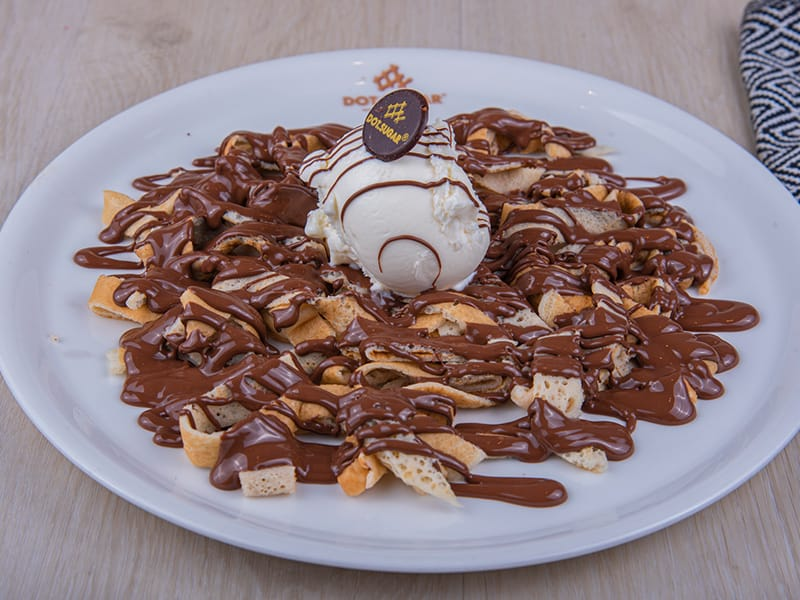

Fettuccine Crepe

Description
A strong, aromatic coffee mixed with dreamy caramel brulee sauce (extra points if you make your own!) and creamy milk, all topped off with a generous dollop of whipped cream and even more caramel sauce because why not? This Starbucks caramel brulee latte copycat recipe tastes exactly like the real thing, but it's much cheaper, quicker and easier to make.
Ingredients
- 2 eggs
- 2 tablespoon sugar
- 1/2 teaspoon vanilla extract
- A dash of salt
- 1/2 cup milk
- 1/2 cup water
- 1 cup flower
- Melted butter or oil spray to coat the pan
- Serve with chocolate syrup honey and fruits or simply dusted by some confectioner’s sugar
Steps
- In a blender, combine all of the wet ingredients and pulse until well blended.
- Let the batter set in the blender’s jug for 15-30 minutes.
- Heat up your griddle to 225F, brush with some butter or oil if you’d like to and pour 1/3 cup of batter spreading it as evenly and as quickly as you can.
- Cook for 40 seconds and flip then cook for another 15 seconds.
- Remove to the cutting board and cut into strips like fettuccini pasta.
- Garnish with chocolate sauce, white chocolate sauce, whipping cream or dust with some powdered sugar.
Return to main page